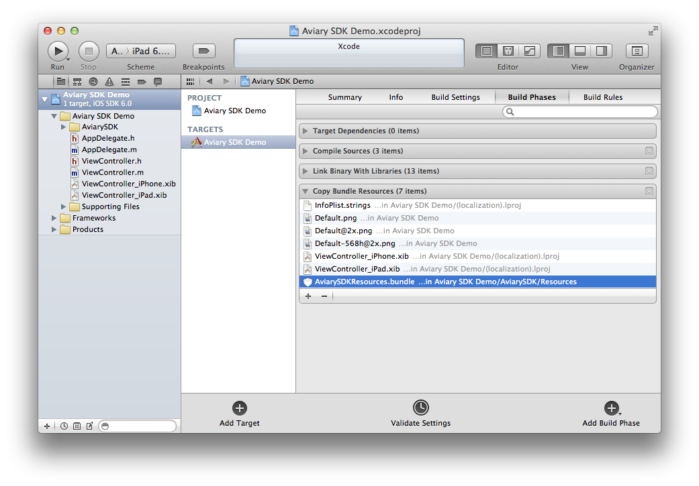
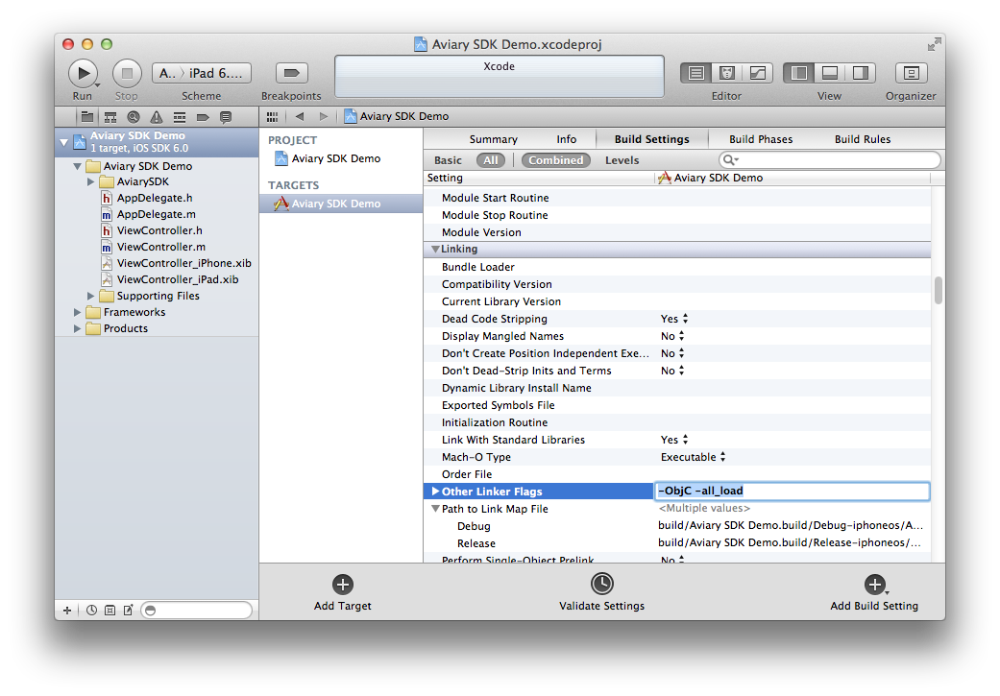
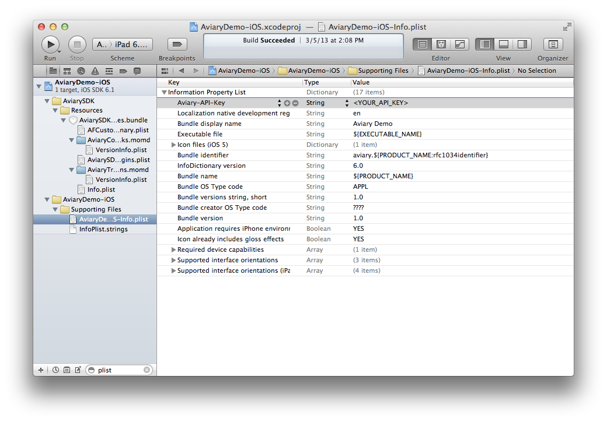

The Aviary iOS SDK provides a solution for developers seeking to add powerful photo editing to their iOS apps. The SDK's main functionality is contained in AFPhotoEditorController, a subclass of UIViewController. The Photo Editor provides a number of advanced image editing tools, including enhance, effects, stickers, frames, orientation, crop, brightness, contrast, saturation, sharpness, draw, text, redeye, whiten, blemish, and meme. These tools are GPU-accelerated, meaning all image modifications happen in real time or close to it, depending on tool complexity and device hardware. The editor outputs images up to 1 megapixel in size, which is sufficient for many photo-based applications (see below if your application requires higher resolution output than this). The default appearance of the editor is intuitive and sleek, and a number of customization options are provided so that the editor's look, feel, and functionality can be made consistent with any app. To leverage the power of the Aviary SDK, a developer need only initialize an AFPhotoEditorController instance with a UIImage, present the editor, and implement two simple delegate callbacks. Integration of the Photo Editor typically consumes 15 minutes of development time or less.
For developers who need larger output images, a high-resolution API is provided. A session that tracks all user edits can be easily obtained from an AFPhotoEditorController. From this session, contexts can be generated, each of which asynchronously replays the session's actions on any input image and passes a finalized output image to a developer-provided completion block. The high-resolution API can output images up to 3 megapixels. For partners who require outputs with even higher resolutions, a Premium version of the SDK with no output size limit is available.
The remainder of this developer guide describes setup and practical usage of all components of the Aviary SDK. For more in-depth resources, please reference the materials listed in See Also.
In order to follow this guide, you must have the iOS 6.0 SDK and Xcode 4.5 installed on your system. For the latest versions, please visit Apple's iOS Dev Center.
You must be using the latest version of Apple's LLVM compiler. You should not have a problem if you're using a fresh install of Xcode 4.x, which uses this compiler by default. However, if you are working on an older project, or you have upgraded from an older version of Xcode, make sure you're not using GCC.
The minimum iOS version supported by the SDK is iOS 5.0. The main reasons for this choice are our use of ARC (Automatic Reference Counting) and our reliance on a number of Apple frameworks and libraries which require iOS 5.
In order to use the SDK in an existing app, you must do the following:
Add files
Copy the AviarySDK folder into your project (select "Create groups for any added folders" if needed). The folder consists of at least one static library, Objective-C header files, and one or more resource bundles containing configuration files and images. Each static library is a universal binary for use on iOS device and simulator architectures (armv7/7s and i386).
Note: you can view the contents of the .bundle files we distribute, although we do not recommend or support modifying their contents.
Link against libraries
Check your target's "Link Binary With Libraries" build phase. Make sure your app is being linked against all the following libraries:
Accelerate.framework
AdSupport.framework (select `Optional` instead of `Required`)
CoreData.framework
CoreText.framework
libAviarySDK.a (or libAviarySDKPremium.a for Premium partners)
libsqlite3.0.dylib
libz.1.2.5.dylib
Foundation.framework
MessageUI.framework
OpenGLES.framework
QuartzCore.framework
StoreKit.framework
SystemConfiguration.framework
UIKit.framework
Copy resources
Make sure AviarySDKResources.bundle is included in your target's "Copy Bundle Resources" build phase.

Add linker flags
Update your target's (or project's) build settings to include the following "Other Linker Flags:"

Add API key
Get by an API key by registering on Aviary.com. In your applications info.plist, add the following key/value:
Key: "Aviary-API-Key"
Value: YOUR_API_KEY

Import headers
Include the following line to make the SDK available to your code:
#import "AFPhotoEditorController.h"
Install documentation (optional)
If you would like to access the AviarySDK documentation through the Organizer and Quick Help in Xcode, please copy com.aviary.AviarySDK.docset from the Aviary Documentation directory into ~/Library/Developer/Shared/Documentation/DocSets/ and restart Xcode.
The Photo Editor lives in AFPhotoEditorController, a presentable UIViewController subclass, provides fast, sleek image editing to users and an easy-to-use programmatic interface to developers.
To launch the editor, create and display an instance of AFPhotoEditorController. You can present it modally, like so:
- (void)displayEditorForImage:(UIImage *)imageToEdit
{
AFPhotoEditorController *editorController = [[AFPhotoEditorController alloc] initWithImage:imageToEdit];
[editorController setDelegate:self];
[self presentViewController:editorController animated:YES completion:nil];
}
You may instead choose to display the controller in other ways, such as by presenting it within a UIPopoverController or by manually adding it to the view hierarchy. If you choose to present the controller in such a way, you are responsible for making sure it receives the standard view controller lifecycle methods, including viewDidLoad, viewWillAppear:, etc. The controller may be displayed full-screen, or you may display it in a smaller portion of the screen. Note that pushing the controller onto a UINavigationController's stack is not recommended, since the Photo Editor itself uses a subclass of UINavigationController.
At minimum, you should implement the following AFPhotoEditorControllerDelegate methods in your presenting view controller:
- (void)photoEditor:(AFPhotoEditorController *)editor finishedWithImage:(UIImage *)image
{
// Handle the result image here
}
- (void)photoEditorCanceled:(AFPhotoEditorController *)editor
{
// Handle cancellation here
}
You are responsible for dismissing the AFPhotoEditorController, which should typically be done in these delegate methods.
If you would like to fully optimize the launch of the editor, add the following line anywhere in your code:
[AFOpenGLManager beginOpenGLLoad];
This tells Aviary to begin loading OpenGL entities that are necessary for image processing. The sooner you call this before presenting the editor, the more likely it is that the user will experience everything in real time when the Photo Editor is first presented. If you choose not to implement this method, the only consequence is that the user might have to wait a very short amount of time for thumbnails to load and/or processing to happen if they use a tool immediately after launching the Photo Editor.
To launch the editor into a specific tool, you can instantiate an instance of AFPhotoEditorController in the following way:
- (void)displayQuickLaunchedEditorForImage:(UIImage *)imageToEdit
{
AFPhotoEditorController *editorController = [[AFPhotoEditorController alloc] initWithImage:imageToEdit quickLaunchTool:kAFEffects];
[editorController setDelegate:self];
[self presentViewController:editorController animated:YES completion:nil];
}
Currently, this option is in Beta and available only to select premium partners. Additionally, only the effects tool (tool key kAFEffects) is supported to be quick launched.
All visual customization is done through the AviarySDKCustomizer, an app included in the AviarySDK directory. Use the "Apply to Xcode Project" button to reflect your changes in your integration of the Aviary SDK. Note that you can save and open customization profiles if you need to transfer them to other members of your organization.
Other customizations, e.g. tool order, crop tool behavior, and premium customizations, are available at the code level. There is extensive documentation within the AFPhotoEditorCustomization class, as well as an Aviary Customization FAQ included in the Documentation directory.
Additionally, you can customize the appearance of the faux status bar that is used in the SDK on devices running iOS 7. Please see the documentation in the AFPhotoEditorCustomization class for more details.
The Aviary SDK offers the ability to produce output images with resolutions up to 3 megapixels (approximately 3 times larger than the maximum output resolution provided by the AFPhotoEditorControllerDelegate methods). The Enterprise and Premium versions of the SDK do not have this limitation, and can output images at any (reasonable) size.
Two objects are used in high resolution rendering: a session that opaquely tracks user actions within the photo editor, and a context that can be used to replay all tracked session actions on a high-resolution image.
An AFPhotoEditorSession opaquely tracks user actions within the photo editor. Each instance of AFPhotoEditorController creates a session object upon initialization, which can be accessed via the readonly session property:
AFPhotoEditorController *photoEditor = [[AFPhotoEditorController alloc] initWithImage:image];
AFPhotoEditorSession *session = [photoEditor session];
A session object is always in one of two states: open or closed. A session is open when the Photo Editor is initialized, and closed when the user presses the "Done" or "Cancel" button in the user interface.
Note: If you intend to use an AFPhotoEditorController's session instance, be sure to obtain a reference to the session before the controller is deallocated. Session objects do not strongly reference the controller from which they were generated, so it is okay to retain a reference to a session after the controller is no longer needed.
An AFPhotoEditorContext is an object that can be used to "replay" an editing session's actions onto an input image. A context can be created from an instance of AFPhotoEditorSession with an image in the following manner:
AFPhotoEditorContext *context = [session createContextWithImage:image];
Alternatively, if a maximum output size (for example, 1200x1200) is desired:
AFPhotoEditorContext *context = [session createContextWithImage:image maxSize:CGSizeMake(1200, 1200)];
The first line above creates a context that can render the session onto an input image at full resolution if the input image is no larger than 3 megapixels. If the image is larger than this size, the output image will first be downscaled (maintaining aspect ratio) so that it is no larger than 3 megapixels. No such downscaling occurs in the Premium or Enterprise version.
The second line above imposes a tighter restriction on the output size. If the dimensions of the image are greater than 1200px (in the above case) on a side, the image will be downscaled to a max of 1200px on either side (maintaining aspect ratio) before processing.
Once you have created a context from a session object, you can use it to render the session onto an input image like so:
[context render:^(UIImage *result) {
// Handle the result image here.
}];
You may create a context and call render: at any time after obtaining a reference to a session. However, the completion block you supply to the method above will not be called until after the session has closed (i.e. after the editor has hit "Cancel" or "Done" in the editor). If the user successfully completed his or her session, the UIImage passed to the completion block will be the rendered image. If the user cancels the Photo Editor or does not modify the image before finishing, the UIImage passed to the block will be nil.
Some things to note about using contexts:
We recommend choosing a maximum output resolution that suits the purposes of your application to provide the best experience for your users.
Processing large images can consume a lot of memory and time. It may be necessary to free up resources and/or display an activity indicator while a context is executing.
To calculate the approximate maximum amount of memory a context could use, multiply the dimensions of the output size and multiply the result by 4. For example, a context with a maximum output size of 1500x1500 will consume approximately 9mb of memory for the processing duration.
Below is sample code for launching a customized editor with an attached session, rendering the hi-res version of the output image, and implementing save and cancel delegate callbacks. Be sure to follow the Project Setup guide before attempting to use the below code.
- (void)launchPhotoEditorWithImage:(UIImage*)image // Developer-defined method, perhaps called when an image is chosen from an image picker or when a button is pressed.
{
// Create photo editor
AFPhotoEditorController *photoEditor = [[AFPhotoEditorController alloc] initWithImage:image];
[photoEditor setDelegate:self];
// Present the editor
[self presentViewController:photoEditor animated:YES completion:nil];
// Capture the editor's session and set a strong property with it so that the session is retained
__block AFPhotoEditorSession *session = [photoEditor session];
[self setCurrentSession:session];
// Create a context with the maximum output resolution
AFPhotoEditorContext *context = [session createContextWithImage:image];
// Request that the context asynchronously replay the session's actions on its image.
[context render:^(UIImage *result) {
// `result` will be nil if the image was not modified in the session, or non-nil if the session was closed successfully
if(result != nil){
[self saveHiResImage:result]; // Developer-defined method that saves the high resolution image to disk, perhaps.
}
// Release the session.
[self setCurrentSession:nil];
}];
}
- (void)photoEditor:(AFPhotoEditorController *)editor finishedWithImage:(UIImage *)image
{
// Handle the result image here and dismiss the editor.
[self doSomethingWithImage:image]; // Developer-defined method that presents the final editing-resolution image to the user, perhaps.
[self dismissViewControllerAnimated:YES completion:nil];
}
- (void)photoEditorCanceled:(AFPhotoEditorController *)editor
{
// Dismiss the editor.
[self dismissViewControllerAnimated:YES completion:nil];
}
For a more comprehensive demonstration of the Aviary SDK, see the Demo app, which is distributed with the SDK.
For more detailed documentation, see the Aviary iOS SDK Documentation.